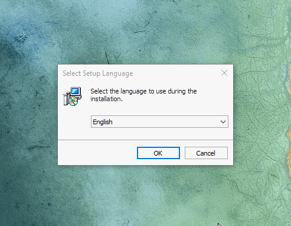

เกริ่น
R เป็นภาษาคอมพิวเตอร์ที่นิยมใช้ในการวิเคราะห์ทางสถิติ เศรษฐมิติ รวมถึง Data Science ข้อดีของ R คือ ฟรี และ มี packages ที่มีความสามารถหลากหลาย เช่น Data Wrangling (การจัดการข้อมูล) Data Visualization (การนำเสนอข้อมูลด้วยภาพ) Model (การทำแบบจำลองเพื่อวิเคราะห์หรือพยากรณ์) เป็นต้น
ในการใช้งานจริง เราจะใช้ R ผ่านเครื่องมือช่วยที่เรียกว่า IDE (Integrated Development Environment) โดยมีความสามารถ เช่น สร้างและแก้ไข script โปรแกรม ประมวลผล แสดงผลทั้งรูปแบบข้อมูลและกราฟฟิก เป็นต้น
สำหรับ R RStudio เป็น IDE ที่ได้รับความนิยม แต่มีข้อจำกัดในการใช้ตัวห้อยตัวลอยในภาษาไทย ไม่สะดวกต่อการ comment เป็นภาษาไทย ในที่นี้จึงขอแนะนำให้ใช้ R กับ Jupyter ซึ่งเป็น IDE ที่มีข้อดี คือ เป็น web-based interactive notebook สามาถ coding พร้อมทั้งแสดงผลได้ในไฟล์เดียวกัน และยังสามารถใช้ markdown ในการเขียนข้อความอธิบาย ได้อีกด้วย นอกจากนี้ Jupyter ยังสามารถใช้กับภาษาอื่นได้ด้วย (Python Julia หรือ Stata)
ในการติดตั้งแนะนำให้ ติดตั้ง Miniconda ก่อน เพื่อติดตั้ง Jupyter จากนั้นจึงติดตั้ง R พร้อมทั้งติดตั้ง IRkernel เพื่อใช้ R ได้ใน Jupyter
Miniconda
- install miniconda
- download miniconda3 เลือกระหว่าง
Miniconda3 Windows 64-bitหรือMiniconda3 Windows 32-bitโดยดูว่าเครื่องเราใช้ windows system อะไร - เปิดไฟล์ installer
- click Next
- click I Agree
- เลือก Just Me และ click Next
- เปลี่ยน Desitnation Folder เป็น
C:\Users\[USERNAME]\Miniconda3โดยที่ USERNAME หมายถึง ชื่อตอน log-in เข้าเครื่อง - click Next ไปเรื่อย ๆ
- download miniconda3 เลือกระหว่าง
- environment path
- คลิ๊ก ขวา ที่ My Computer แล้วเลือก Properties
- เลือก Advance system setting → Advanced → Environment Variables
- เลือก Variable ชื่อ path แล้วเลือก Edit
- คลิ๊ก New แล้วเพิ่ม path ดังนี้
C:\Users\[USERNAME]\miniconda3
C:\Users\[USERNAME]\miniconda3\Script
C:\Users\[USERNAME]\miniconda3\Library\bin
- install packages
- ไปที่ start → Anaconda3 → Anaconda Powershell Prompt
- โดยพิมคำสั่ง
pip install ipython ipykernel jupyterlab
R
- install R
- download R สำหรับ windows และ เปิดไฟล์ installer
- click Next
- click I Agree
- เลือก Just Me และ click Next
- เปลี่ยน Desitnation Folder เป็น
C:\Users\[USERNAME]\R\[R-x.x.x]โดยที่ USERNAME หมายถึง ชื่อตอน log-in เข้าเครื่อง - เลือก install version ตามระบบของ windows คือ เลือก 32 bit หรือ 64 bit อย่างใดอย่างหนึ่ง วิธีการดูว่า windows นั้นเป็นระบบไหน ให้คลิ๊ก ขวา ที่ My Computer แล้วเลือก Properties ดูที่ section system
- click Next ไปเรื่อย ๆ
- 
- environment path
- คลิ๊ก ขวา ที่ My Computer แล้วเลือก Properties
- เลือก Advance system setting → Advanced → Environment Variables
- เลือก Variable ชื่อ path แล้วเลือก Edit
- คลิ๊ก New แล้วเพิ่ม path
C:\Users\[USERNAME]\R\[R-x.x.x]\bin\x64โดยที่ x64 หมายถึง version 64 bit
- install package
- ไปที่ start → R → R x64 x.x.x
- พิมพ์คำสั่ง
install.packages('IRkernel') - พิมพ์คำสั่ง
IRkernel::installspec()
ทดสอบ Jupyter
- ไปที่ start → Anaconda → Anaconda Powershell Prompt
- พิมพ์คำสั่ง
jupyter labdefaullt browser จะเปิดขึ้นhttp://localhost:8888/lab - สร้าง folder ใหม่ ตั้งชื่อว่า demo เป็นต้น
- เลือก R ใน section Notebook
- ลองพิมพ์คำสั่ง